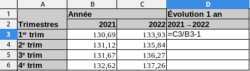
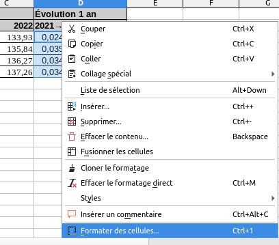
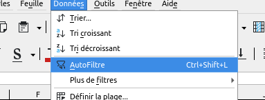
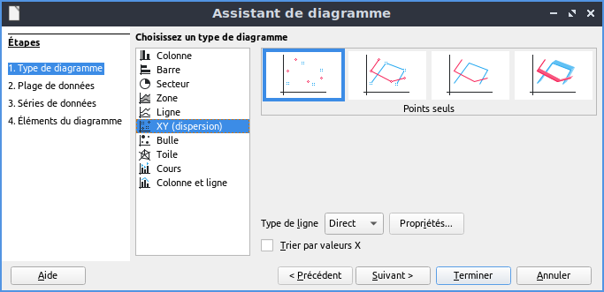
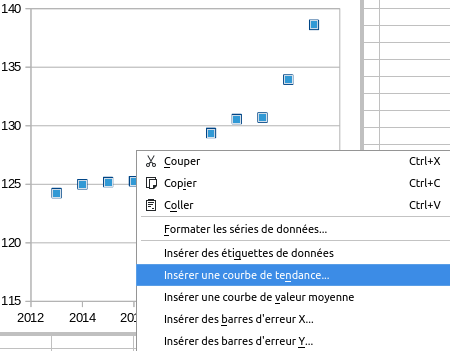
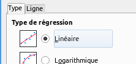
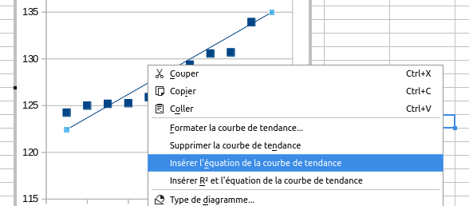
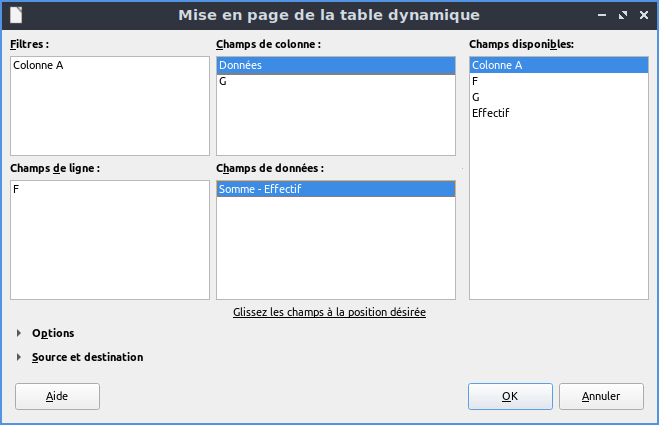

25% correspond au nombre \(\frac{25}{100}=0{,}25\).
30% correspond au nombre \(\frac{30}{100}=0{,}3\).
-50% correspond au nombre \(\frac{-50}{100}=-0{,}5\)
250% correspond au nombre \(\frac{250}{100}=2{,}5\)
Proportion ou fréquence
Lorsqu'on a deux quantités A et B (dans la même unité), avec A une partie de B :
La proportion ou fréquence \(p\) est le rapport \(p=\frac{A}{B}\).
On peut l'exprimer en
pourcentage.
Un gâteau de B=40 grammes dont la part de sucre est A=4 grammes contient une proportion de sucre (en
masse) de \(\frac{A}{B}=\frac{4}{40}=0{,}1=10\%\).
Une boisson dont le degré d'alcool (éthanol) est 8 degrés contient 8% d'éthanol en volume.
Cela signifie que B=20cL de cette boisson contient un volume d'éthanol de A = pB = 8% de 20cl =
0,08×20 = 1,6 cL.
Calculer : 3% de 200€ ; 200% de 1,5m ; 15% de 3min.
Donner la fréquence correspondant à : 3€ par rapport à 10€ ; 5cm par rapport à
20cm.
Pourcentages d'augmentation et de diminution
A est une quantité et t est un nombre.
Pour appliquer une augmentation de t% à A,
on multiplie A par (1+t%).
Pour appliquer une diminution de t% à A,
on multiplie A par (1-t%).
On appelle coefficient multiplicateur le nombre (1±t%).
Calculer les coefficients multiplicateurs associés à : une hausse de 20% ; une baisse de 5% ; +50%
; -7%.
Appliquer ces évolutions à une somme de 20€.
Lorsqu'une donnée passe d'une valeur initiale \(V_i\) à une valeur finale \(V_f\), son
coefficient multiplicateur est donné par \(\frac{V_f}{V_i}\).
Calculer les coefficients multiplicateurs et en déduire les pourcentages d'évolution associés :
de 40€ à 50€ ; de 40€ à 30€ ; de 37°C à 41°C.
Compléter : Si une quantité est divisée par 2, elles est réduite de ...% . Si une quantité est
divisée par 4, elles est réduite de ...% . Si une quantité est multipliée par 3, elle augmente
de ...%
Un jeu coûte 50€ TTC (TTC : après application d'une hausse de 20% liée à la TVA). Quel est son prix
sans TVA ?
Applications et utilisation du tableur
Nous allons étudier des données provenant de l'insee concernant l'indice de référence des
loyers.
À l'aide d'une recherche, expliquer ce que mesure cet indice.
Manipulations et formules
Nous allons utiliser le tableur LibreOffice Calc.
Télécharger le fichier insee_irl.ods,
l'ouvrir avec LibreOffice Calc et vérifier (en bas) que l'on est bien sur le 1er
onglet
onglet_irl_1. Enregistrez régulièrement votre travail.
Dans un tableur, une formule mathématique à appliquer doit être précédée du symbole
=.
Entrer la formule figurant sur la 1ère capture ci-contre dans la cellule
D3.
Que permet d'obtenir cette formule ?
En utilisant la poignée de recopie (sélectionner la cellule D3, tirer jusqu'au
bas du tableau le petit carré apparaîssant dans la cellule sélectionnée, en bas à droite),
ou bien en faisant un copier-coller de la formule, remplir la plage
D4:D6.
La formule s'adapte automatiquement ; on peut le vérifier en sélectionnant une cellule de la
colonne et en regardant la ligne «=» au dessus du tableau.
Comme sur la capture 2, sélectionner l'ensemble des nombres de la colonne D et
faire un clic droit /
formater les cellules.
Sélectionner nombre / pourcentage (avec deux décimales).

capture 1

capture 2
Passer sur le 2e onglet (en bas) onglet_irl_2.
Quelle sont les différences avec le tableau précédent ?
Compléter la colonne E en représentant les nombres par des pourcentages.
À partir de quelle date l'IRL dépasse-t-il 130 ?
À partir de quelle date son augmentation dépasse-t-elle 2% ?
Filtrage et tri des données
Toujours le 2e onglet (en bas) onglet_irl_2.
Sélectionner la première ligne (les étiquettes/descripteurs) et sélectionner dans le menu
Données / Autofiltre.
Pour chaque colonne, on peut sélectionner l'icône ⍔ pour trier/filtrer.
Filtrer le tableau en utilisant l'icône ⍔ de la colonne trimestre, pour ne
faire
apparaître que les trimestres 1 (T1).

capture 3
Représentations sous la forme d'un nuage de points et courbe de tendance
Toujours le 2e onglet (en bas) onglet_irl_2.
On va tracer le nuage de point figurant en X : le pourcentage d'évolutionet en Y :
l'année
(son trimestre 1
car le tableau a été filtré dans l'exercice précédent). On
obtiendra donc un diagramme donnant l'augmentation des prix en fonction du temps.
Sélectionner une cellule en dehors de tableau pour donner un ancrage au diagramme.
Dans le
menu, choisir insertion/diagramme.
Puis dans la boîte :
type de diagramme / XY (dispertion) / points seuls
(image de
gauche).
plage de données : vérifier que la plage
A1:E43 a
été retenue
: il
s'agit de l'ensemble du tableau. Remarque : les signes $ sont utilisés par le tableur
pour
fixer les lettres (lignes) ou chiffres (colonnes). Les caractères bloqués ne seront
pas
modifiés en cas de copie.
Série de données : (axes X et Y) : supprimer
Trimestre, Valeur et parution
(inutiles)
Sélectionner Valeurs X et entrer au clavier la plage
Annéeou bien
cliquer sur l'icône de sélection ⍐ et sélectionner directement la plage sur le
tableau.
Faire de même pour les Valeurs Y en sélectionnant
l'évolution.
Éléments du diagramme : vous pouvez compléter ici le
titre et
les étiquettes sur les axes.
Cliquer sur terminer. Que peut-t-on observer sur ce
diagramme ?

capture 4
Insérer un autre diagramme, donnant la valeur de l'indice en fonction de l'année
(T1).
Commenter et
comparer les informations apportées par chacun des deux diagrammes.
Sélectionner un point de ce diagramme et faire clic droit / Insérer une courbe de
tendance.
Sélectionner linéaire (droite) dans l'onglet type.
Cliquer sur la droite tracée pour la sélectionner, puis faire un clic droit et sélectionner
Insérer R² et l'équation de la courbe de tendance.
Quel sens donner au coefficient directeur (nombre qui multiplie la variable x) dans
l'équation affichée ?
Le R² est un indicateur qui permet de «mesurer» l'alignement des points sur la
droite.
On considère qu'un R² supérieur à 0,85 est associé à un «bon» alignement
(significatif).
Est-ce le cas ici ?
Obtenir le R² pour une droite de tendance tracée sur le diagramme précédent. Est-il bon ?

capture 5

capture 6

capture 7
Le tableau ci-contre donne le prix moyen en euros, en France, du paquet de 20 cigarettes, et le nombre de
paquets
vendus par an en milliards.
Année
2004
2007
2010
2013
2016
prix
5
5,13
5,65
6,7
7
ventes
2,75
2,75
2,74
2,38
2,25
La hausse du prix fait-elle significativement diminuer le tabagisme ? Pour argumenter, construire le nuage
de points associé à ce tableau.
Analyse croisée d'un couple de caractères
Une fréquence portant sur l'ensemble de la population s'appelle une fréquence marginale.
deux caractères : 3 manières de calculer des fréquences
On coupe un paquet de 52 cartes en deux parts égales P1 et P2. On s'intéresse à deux caractères :
Caractère X : être dans le demi-paquet P1 ou P2 ;
Caractère Y : être de couleur noire (pique ou trèfle) ou rouge (cœur ou carreau).
↓X \ Y→
rouges
noires
total
P1
10
...
26
P2
...
...
26
total
...
...
52
Compléter le tableau par les effectifs (nombres de cartes).
Construire un autre tableau contenant les fréquences marginales.
Construire un autre tableau contenant les fréquences par rapport aux valeurs de X : la somme sur
chaque ligne doit faire 100%.
Construire un autre tableau contenant les fréquences par rapport aux valeurs de Y : la somme sur
chaque colonne doit faire 100%.
Bonus : remplacer 10 dans le tableau original par un nombre quelconque, et montrer
qu'il y a autant de cartes rouges dans P1 que de cartes noires dans P2.
On analyse les données des attaquants du club de football «Brutal Sporting Club». Voici les données
brutes des derniers matchs ; F désigne le nombre de fautes et G le nombre de buts.
Compléter le tableau des effectifs à partir des données brutes.
Compléter le tableau des fréquences marginales.
On pourra écrire dans la cellule I10 la formule : =B3/$F$6 (on rappelle
que $ fixe la lettre/chiffre qui suit), l'étendre à tous les nombres du tableau, et
formater en les nombres en pourcentage.
Adapter cette méthodes pour remplir de même les deux tableaux de fréquences lignes/colonnes.
Automatiser la création du tableau
Sélectionner l'ensemble des données brutes.
Dans le menu Données, séctionner table
dynamique/insérer
ou pilote de données (selon les versions de LibreOffice).
Choisir dans la boîte Sélection active, valider «ok».
Glisser-déposer les champs disponibles (à droite), vers les champs de ligne, colonne et
données
(en double-cliquant sur les champs, on peut les configurer plus en profondeur, mais ce n'est
pas
nécessaire ici), de manière à créer la structure du tableau.
Après validation, un nouvel onglet contenant la table dynamique sera créé.

Rugby
Les stades toulousains qui hébergent le plus d'équipes accueillent-ils plus les scolaires ? Est-ce plus
ou
moins le cas pour Toulouse Ouest ?
En utilisant le fichier stades.ods, donner des
éléments de réponses.
On pourra réaliser un tableau croisé dynamique, filtrer les données, ... et aussi utiliser si besoin la
fonction =SI(condition, alors, sinon). Par exemple, en écrivant dans
la
cellule B2 la formule =SI(A1<10, 50, 9) , celle-ci affichera 50 si la valeur
de
A1 est inférieure à 10 et 9 sinon.
(données extraites de data.toulouse.metropole.fr).